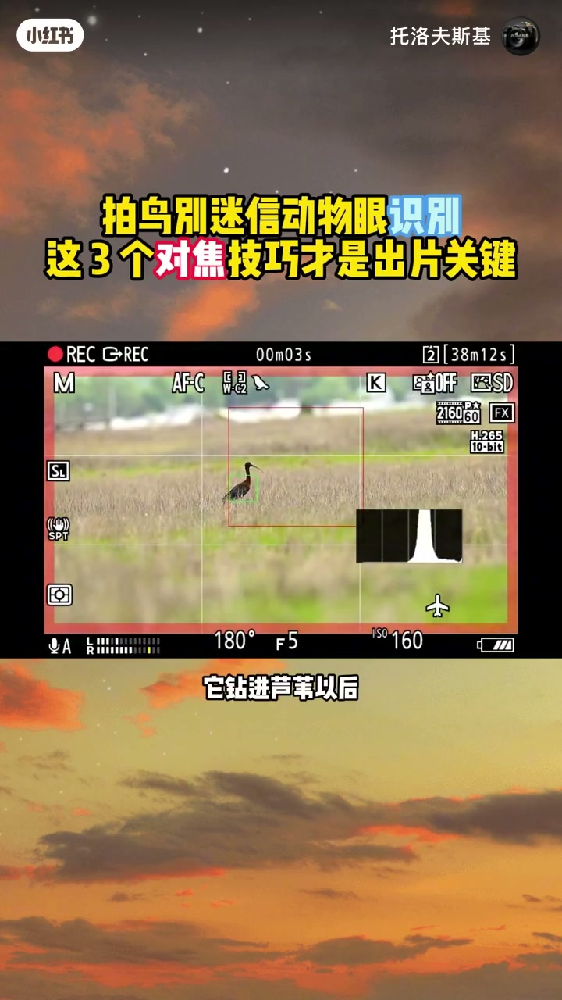
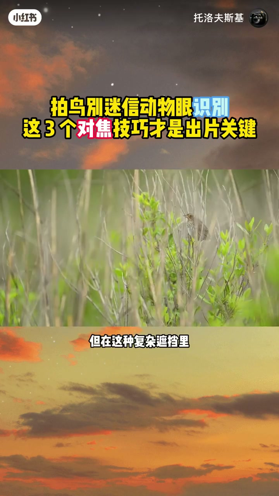
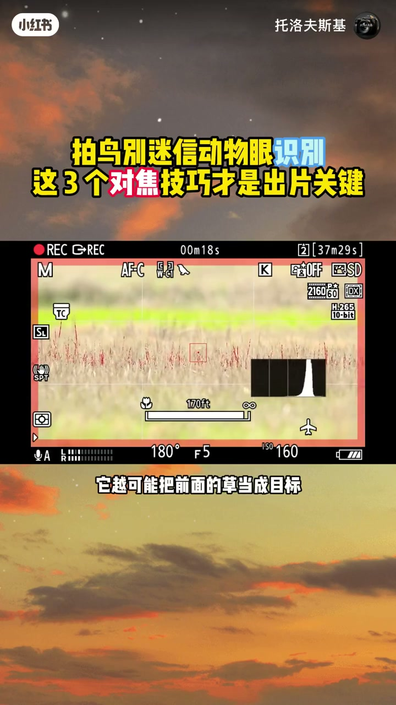
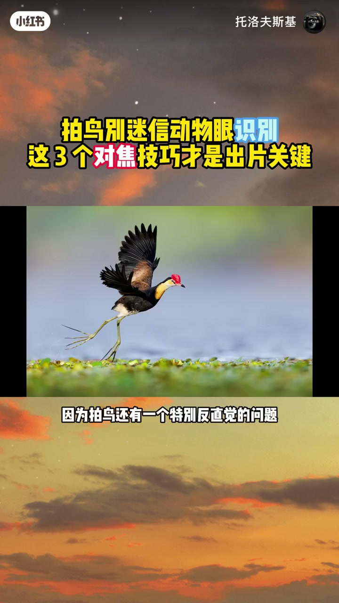
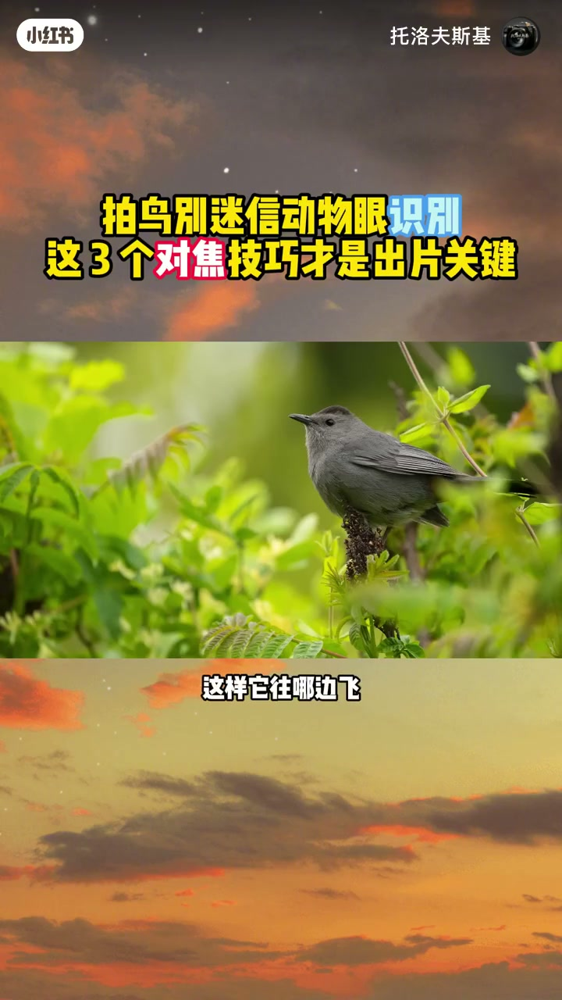
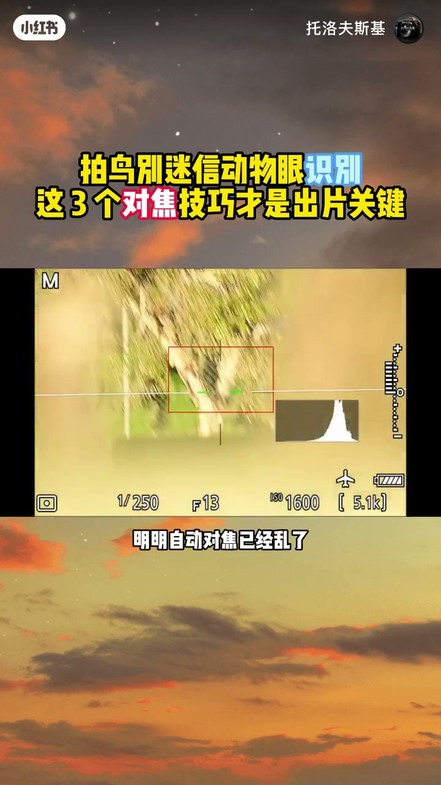
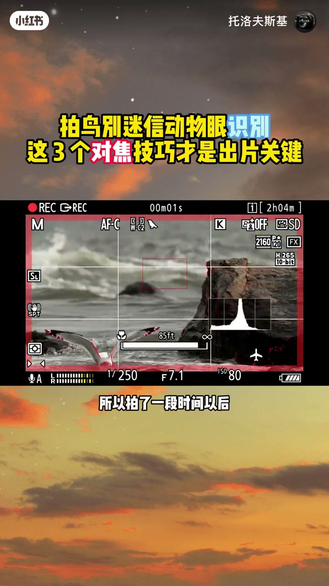
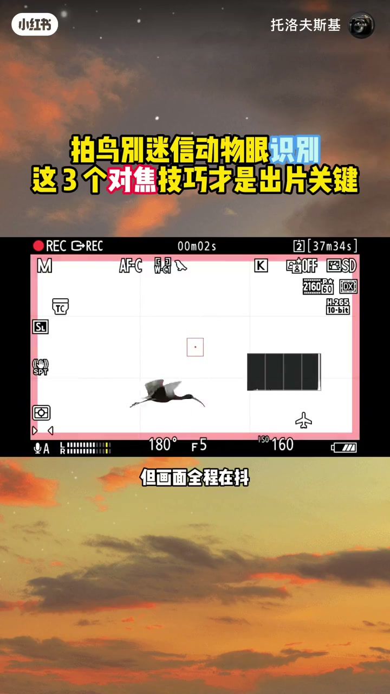

内容要点
「拍鸟总糊？3 个对焦技巧比动物眼识别好用」教程要点：为什么你拍鸟,明明开着动物眼识别 → 最后还是一段废片,很可能不是相机不行 → 是你太相信自动对焦了 → 我以前也一样,有一次拍一只环；详见正文。
知识结构
为什么你拍鸟,明明开着动物眼识别
有些相机还可以调低重新换目标的反应速度
明明自动对焦已经乱了,还在跟它较劲
- 为什么你拍鸟,明明开着动物眼识别
- 最后还是一段废片,很可能不是相机不行
- 是你太相信自动对焦了
- 我以前也一样,有一次拍一只环
- 它钻进鲁威以后,我心里特别踏实
为什么你拍鸟,明明开着动物眼识别
00:00–01:04为什么你拍鸟,明明开着动物眼识别
为什么你拍鸟,明明开着动物眼识别；最后还是一段废片,很可能不是相机不行；是你太相信自动对焦了；我以前也一样,有一次拍一只环；它钻进鲁威以后,我心里特别踏实；有动物眼识别,我还管什么,让它自己找不就行了；结果拍完回忆一看,鸟是虚的；草是清楚的,那一刻我才发现；自动对焦最大的坑不是它对不上；而是它对上了你不想拍的东西；你想想,鲁威,草,树枝；全在鸟前面,相机虽然能认出鸟；但在这种复杂遮挡里,它也不可能每一次都判断对；后来我才明白,拍野生动物；对焦最重要的不是让相机一直对焦；而是,什么时候让它对焦；什么时候别让它继续找,那具体怎么做；其实没有那么复杂,鸟从遮挡里露出来我就让它追；一旦它又钻进草里,我反而不会一直按着不放；因为这时候,你越让它找；它越可能把前面的草当成目标；等鸟重新露出来,再把追焦交给它


01:05–02:11有些相机还可以调低重新换目标的反应速度
有些相机还可以调低重新换目标的反应速度；让它别因为短暂遮挡,就马上去抢前景；相机负责识别,你负责决定什么时候让它工作；但这里还有一个问题,你把追焦控制好了；就真的不会拍废了吗?还没有；因为拍鸟还有一个特别反直觉的问题；你越想把鸟拍大,越容易把鸟拍没；很多人一看到鸟,第一反应就是把焦段拉到最长；鸟是大了,但你的容错空间也没了；它只要突然往前一飞,或者往旁边一转；你的整个取景范围就没了,等你再去找它；可能已经只剩一片天空；所以我现在拍飞鸟,宁愿让鸟小一点；也不会把画面塞得太满,留一点飞行空间；这样它往哪边飞,我都有余地根；而且留一点环境还有一个好处；你不只是拍到一只鸟,还可以看出来它在哪里；在干什么,很多时候这比把一个鸟头怼满整个画面；更有故事,跟拍别猛甩；提前预判方向,用身体带着镜头匀速跟；让鸟稳定待在画面里；但还有一种情况,很多人特别容易栽


02:10–03:10明明自动对焦已经乱了,还在跟它较劲
明明自动对焦已经乱了,还在跟它较劲；草、树枝、卤尾全在前面；相机已经不知道你到底要拍谁；这时候你继续按,其实只是在让相机继续猜；相机已经开始猜了,你就别让它继续猜；该切手动的时候,就别跟自动对焦较劲；在一些复杂遮挡的场景里；手动对焦配合峰值对焦,反而可能更直接；所以拍了一段时间以后,我越来越觉得；真正会拍的人不是把相机所有自动功能都关掉；而是知道什么时候该相信相机,什么时候该自己接管；因为相机负责判断画面；但决定拍什么的人,始终是你；最后我特别想问问你,拍鸟的时候；你最容易栽在哪一步；A 对不上焦；B 鸟一飞就出画；C 跟住了,但画面全程在抖；D 对上了焦,最后发现清楚的是草；评论区直接打ABCD就行；如果你愿意,再说一句你最离谱的一次翻车经历；我想看看大家到底是怎么把鸟拍废的




口述/画面要点（40段）
结合 Whisper medium 与画面大字整理；专有名词已校对。
为什么你拍鸟,明明开着动物眼识别
最后还是一段废片,很可能不是相机不行
是你太相信自动对焦了
我以前也一样,有一次拍一只环
它钻进鲁威以后,我心里特别踏实
有动物眼识别,我还管什么,让它自己找不就行了
结果拍完回忆一看,鸟是虚的
草是清楚的,那一刻我才发现
自动对焦最大的坑不是它对不上
而是它对上了你不想拍的东西
你想想,鲁威,草,树枝
全在鸟前面,相机虽然能认出鸟
但在这种复杂遮挡里,它也不可能每一次都判断对
后来我才明白,拍野生动物
对焦最重要的不是让相机一直对焦
而是,什么时候让它对焦
什么时候别让它继续找,那具体怎么做
其实没有那么复杂,鸟从遮挡里露出来我就让它追
一旦它又钻进草里,我反而不会一直按着不放
因为这时候,你越让它找
它越可能把前面的草当成目标
等鸟重新露出来,再把追焦交给它
有些相机还可以调低重新换目标的反应速度
让它别因为短暂遮挡,就马上去抢前景
相机负责识别,你负责决定什么时候让它工作
但这里还有一个问题,你把追焦控制好了
就真的不会拍废了吗?还没有
因为拍鸟还有一个特别反直觉的问题
你越想把鸟拍大,越容易把鸟拍没
很多人一看到鸟,第一反应就是把焦段拉到最长
鸟是大了,但你的容错空间也没了
它只要突然往前一飞,或者往旁边一转
你的整个取景范围就没了,等你再去找它
可能已经只剩一片天空
所以我现在拍飞鸟,宁愿让鸟小一点
也不会把画面塞得太满,留一点飞行空间
这样它往哪边飞,我都有余地根
而且留一点环境还有一个好处
你不只是拍到一只鸟,还可以看出来它在哪里
在干什么,很多时候这比把一个鸟头怼满整个画面